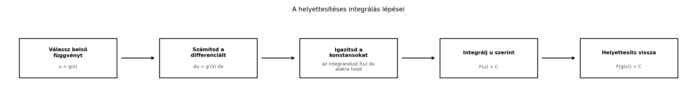

A deriválásnál a láncszabály az egyik legfontosabb eszköz: ha egy
függvény összetett, akkor a külső és belső derivált szorzatát vesszük.
Az integrálásnál ezt a folyamatot meg kell fordítanunk. Ha egy
integrandusban egy összetett függvény külső deriváltja és a belső
függvény deriváltja is szerepel, akkor a helyettesítéses integrálás
szinte azonnal megadja a primitív függvényt.
14.2.1 Motiváció: hőleadás és a
„visszafelé” gondolkodás
Képzeljünk el egy forró kávét, amely a szobában hűl. A kávé hőleadási
teljesítménye jó közelítéssel exponenciálisan csökken: ha kezdetben
watt a hőveszteség, akkor
másodperc múlva
ahol a
s az időállandó, amely a hűlés gyorsaságát jellemzi (ennek pontos
származtatását a Modellezés
differenciálegyenletekkel alfejezetben nézzük meg). Ha arra vagyunk
kíváncsiak, mennyi hő távozott összesen az első
másodpercben, a teljesítmény primitív függvényét kell meghatároznunk,
tehát ki kell számítanunk a
integrált. Ez első ránézésre nehéznek tűnhet, de ha észrevesszük,
hogy az
belső függvénye
,
és ennek deriváltja
,
akkor a láncszabály megfordításával azonnal célba érünk.
14.2.2 Szemléletes kép: a
láncszabály megfordítása
A láncszabály szerint, ha
primitív függvénye
-nek,
azaz
,
és
differenciálható, akkor az összetett
deriváltja
Ezt az egyenlőséget jobbról balra olvasva kapjuk a helyettesítéses
integrálás magját:
Szemléletesen: ha az integrandusban felismerünk egy belső
függvényt
(),
és ennek deriváltja
()
szorozza a belső függvénybe helyettesített külső függvényt
(),
akkor a primitív függvény egyszerűen a külső függvény primitív függvénye
a belső függvénybe visszahelyettesítve.
Például tudjuk, hogy
,
ezért
Itt
a belső függvény,
a deriváltja, az
külső függvényt pedig
-be
helyettesítettük.
14.2.3 Definíció és a formális
számolás
Állítás (előzetesen). Legyen
és
intervallum,
differenciálható függvény, és legyen
folytonos, amelynek
egy primitív függvénye
-n. Ekkor
az
függvény primitív függvénye
-n:
A gyakorlatban ezt gyakran az
formális jelöléssel írjuk, amellyel az integrál
alakot ölti, majd visszahelyettesítünk:
.
A
formális jelentése. A
és
itt differenciálok, amelyeket a deriváltból definiálunk: ha
,
akkor
definíció szerint
.
Ez a jelölés nem azt jelenti, hogy a
és
különálló számok lennének, amelyekkel tetszőlegesen oszthatunk, hanem
egy tömör emlékeztető arra, hogy az integrandusban a
kombináció éppen a belső függvény differenciálja. A formális számolás
azért működik, mert a láncszabály garantálja az eredmény helyességét; a
differenciálokkal való átírás csak kényelmes gyorsírás.
14.2.4 Tétel és bizonyítás
Tétel. Legyen
differenciálható az
intervallumon, és legyen
folytonos a
intervallumon. Ha
primitív függvénye
-nek,
azaz
,
akkor
Bizonyítási terv. A bizonyítás lényege egyetlen
lépés: a láncszabályt alkalmazzuk az
összetett függvényre, és megmutatjuk, hogy annak deriváltja éppen az
integrandus.
Bizonyítás. Definiáljuk a
függvényt. Mivel
differenciálható és
differenciálható (hiszen
),
a láncszabály szerint
is differenciálható, és minden
-re
felhasználva, hogy
.
Ez pontosan azt jelenti, hogy
primitív függvénye az
függvénynek. A primitív függvények halmaza
alakú, tehát
ahogy a tétel állítja. ∎
14.2.5 A második alak:
helyettesítés
Néha kényelmesebb az új változót nem
-val,
hanem magával az
-et
kifejező
függvénnyel bevezetni. Ilyenkor az integrált az
helyettesítéssel alakítjuk át, ahol
az új változó.
Tétel. Legyen
szigorúan monoton, differenciálható függvény, amelyre
minden
-re,
így
invertálható. Tegyük fel, hogy
minden
-re.
Ekkor
Másképpen fogalmazva: ha
,
akkor
ahol a jobb oldal kiszámítása után
visszahelyettesítést végzünk.
Bizonyítás. Legyen
.
A láncszabály és az inverz függvény deriválási szabálya szerint
Ezért
primitív függvénye
-nek,
tehát az állítást bebizonyítottuk. ∎
A gyakorlatban a második alakot akkor használjuk, ha az integrandus
-et
-vel
kifejezve egyszerűbbé válik. A
differenciált is formálisan írjuk fel.
14.2.6 Kidolgozott példák
14.2.6.1 1. példa:
Megoldás. Válasszuk a belső függvényt:
.
Ekkor
Az integrandusban
szerepel, ami a
fele, ezért írjuk át:
Az integrál így
Visszahelyettesítve
-et:
Ellenőrzés. Deriváljuk a kapott eredményt:
ami megegyezik az integrandussal.
14.2.6.2 2. példa:
Megoldás. Írjuk a
-et
alakba:
Legyen
.
Ekkor
tehát
.
Az integrál:
Visszahelyettesítve
:
Ez
alakban is írható.
14.2.6.3 3. példa: lineáris belső
függvény,
Megoldás. Itt a belső függvény
,
deriváltja
.
Az integrandusban a
szorzó „hiányzik”, de konstanssal pótolható:
A helyettesítéssel
,
,
tehát
Általánosan: ha
primitív függvénye
,
akkor
14.2.6.4 4. példa:
típusú helyettesítés,
Megoldás. Válasszuk az új változót úgy, hogy a
gyökös kifejezés megszűnjön: legyen
A
függvény
mellett szigorúan monoton nő és
,
így a tétel
-re
alkalmazható; az inverz
-re
.
Helyettesítsünk:
Ezt már könnyen integráljuk:
Visszahelyettesítve
:
Ez az alak is helyes. Közös nevezőre hozva tovább egyszerűsíthető, de
nem szükséges.
Ellenőrzés. Deriváljuk a jobb oldalt:
,
tehát a megoldás helyes.
14.2.6.5 Ellenpélda:
nem számítható ki elemi módon
Sokan megpróbálják az
helyettesítést alkalmazni az
integrálra. Ilyenkor azonban
,
és az integrandusban nem szerepel
,
így a
-et
nem tudjuk konstansszor
-vá
alakítani. A helyettesítés tehát nem vezet célra. Sőt, az
primitív függvénye nem fejezhető ki véges kombinációval elemi
függvényekből. Ez a fontos ellenpélda arra figyelmeztet, hogy a
helyettesítéses integrálás nem csodaszer: a belső függvény deriváltjának
konstansszoros formában jelen kell lennie ahhoz, hogy a módszer
működjön.
14.2.7 Számolási recept

A helyettesítéses integrálás lépései - A
láncszabály megfordítása: keressünk belső függvényt és
deriváltját
A recept lépései:
Válassz belső függvényt. Keresd meg az
integrandusban azt a kifejezést, amelyik egy másik függvény belsejében
van (például
az
-ben,
a
-ben,
az
-ben).
Jelöld ezt
-szel.
Számítsd ki a differenciált. Képezd a
kifejezést.
Igazítsd a konstansokat. Ha az integrandusban a
derivált konstansszorosa szerepel, írd át
-et
-ra,
és a konstansokat emeld ki. Az integrandusból
alakot kell kapnod.
Integrálj az új változó szerint. Határozd meg
-t,
azaz az
primitív függvényét.
Helyettesíts vissza. Írd vissza
-et
a kapott
-be.
Ellenőrizd deriválással. Deriváld a kapott primitív
függvényt, és hasonlítsd össze az eredeti integrandussal.
Az
típusú helyettesítésnél a lépések hasonlóak, de a 2. lépésben
-t
számolunk, és a 5. lépésben
-et
kell visszahelyettesíteni.
14.2.8 Valós életbeli alkalmazás:
hűlő kávé összegzett hőleadása
Térjünk vissza a kávé hűléséhez. Szemléltető modellértékek: egy
bögrényi kávé hőkapacitása
,
a kezdeti hőmérséklet-különbség a szobához képest
,
az időállandó
(20 perc). A hőleadási teljesítmény
másodperc múlva
ahol a kezdeti teljesítményt úgy választjuk, hogy a végtelen idő
alatt leadott hő a teljes kezdeti hőkülönbséget fedezze:
,
azaz
.
A
idő alatt leadott összes hőt a teljesítmény primitív függvényéből kapjuk
meg. Keressük tehát a
kifejezést.
A belső függvény itt
,
deriváltja
.
Az integrandust átrendezzük:
Így a helyettesítés
,
,
tehát
Visszahelyettesítve:
A
konstanst abból határozzuk meg, hogy
-kor
még nem távozott hő, tehát
.
Ebből
azaz
.
Tehát
Itt
mértékegysége joule, mert a watt másodperccel szorozva joule-t ad.
Ellenőrzés:
esetén
,
vagyis a végtelen idő alatt leadott hő éppen a teljes kezdeti
hőkülönbség.
Nézzük meg, mennyi hő távozott 10 perc = 600 másodperc alatt.
Ekkor
Az
,
ezért
Tehát körülbelül 24,8 kJ hő távozott a kávéból az első 10 percben (ez
a
hőkülönbség mintegy
-ának
felel meg, kb.
lehűlés).
A modell korlátai. Ez a számítás feltételezi, hogy a
hőleadási teljesítmény exponenciálisan csökken, ami csak akkor igaz, ha
a kávé hőmérséklete és a szoba hőmérséklete közötti különbség
exponenciálisan csökken, és a hőátadási együttható állandó. A valóságban
a párolgás, a csésze hőkapacitása és a keveredés miatt a folyamat
bonyolultabb lehet; a közölt paraméterek szemléltető modellértékek, nem
mérési adatok.
14.2.9 Python-illusztráció: SymPy
ellenőrzés
A SymPy képes szimbolikusan integrálni, így ellenőrizhetjük a fenti
eredményeket. A kód nem bizonyítás, hanem számítógépes ellenőrzés.
A negyedik eredmény a SymPy által adott alak;
-et
kiemelve és
hatványaira rendezve visszakapjuk a
kifejezést (a két alak azonos). A SymPy a
integráljában az abszolút értéket nem írja ki
();
valós
-re
a helyes alak
.
Az ellenőrző sorokban a deriváltak valóban az eredeti integrandusokat
adják vissza (a
a SymPy-ban a
).
14.2.10 Tipikus hibák
A lineáris belső függvény konstansának
elhagyása.
Hiba:
.
Helyes: mivel a belső függvény
,
deriváltja
,
az integrál
.
A konstans szorzó a helyettesítésben jelenik meg:
,
tehát
.
A
előjelének elrontása.
Hiba:
esetén
,
de valaki
-et
ír.
Helyes:
deriváltja
,
tehát
,
ezért
.
Az előjel elhagyása hibás előjelhez vezet:
helyett a helyes
.
A
-et
a
-ra
való átváltásnál a változó keveredése.
Hiba: az
helyettesítésnél a
kifejezést elfelejtik, vagy a
-t
nem írják vissza
-re
a végén.
Helyes: minden
-et
ki kell fejezni
-vel,
és az integrálás után vissza kell helyettesíteni
-et,
hogy a végeredmény az eredeti változóban legyen.
Nem létező helyettesítés erőltetése.
Hiba:
-ben
választása, mert a
nem állítható elő konstansszorzóval, hiszen az integrandusban nincs
tényező.
Helyes felismerés: a
primitív függvénye nem elemi függvény, így ez az integrál nem számítható
ki a szokásos elemi módszerekkel.
14.2.11 Önellenőrzés
Igaz-e, hogy
?
Mennyi
?
Ha
,
akkor mennyi
?
Az
helyettesítésnél miért fontos, hogy
invertálható legyen?
Igaz-e, hogy
?
Indokold!
Mennyi
?
A válaszok a ### Megoldások rész elején találhatók.
14.2.12 Feladatok
1. feladat (A). Számítsd ki a következő
integrálokat:
2. feladat (A). Írd fel a
-t,
ha
,
majd számítsd ki:
3. feladat (B). Határozd meg az alábbi
integrálokat:
4. feladat (B). Az
típusú helyettesítéssel számítsd ki:
5. feladat (C). Bizonyítsd be: ha
,
akkor minden
és
esetén
6. feladat (D). Egy gyógyszer kiürülési sebessége a
vérből
,
ahol
,
.
Mennyi gyógyszer ürült ki összesen az első 5 órában, ha
-kor
még éppen
sebességgel ürül? (Az összes kiürült mennyiség a sebesség primitív
függvényének megváltozása.)
14.2.13 Megoldások
14.2.13.1 Önellenőrzés –
válaszok
Igaz. Deriválással:
,
tehát a primitív függvény
.
,
mert a belső függvény deriváltja
.
Ha
,
akkor
.
Azért, hogy a
visszahelyettesítés egyértelmű legyen; ha
nem invertálható, akkor nem tudunk minden
-hez
egyetlen
-t
rendelni.
Hamis. A helyettesítés
esetén
,
de az integrandusban nincs
,
így a
nem vihető ki a konstans szorzó elé, mert függ a változótól. A
deriváltja nem
.
,
mert
,
,
és
.
(Ha a
-nek
nézzük, ugyanez.)
14.2.13.2 Feladatok megoldásai
1. feladat (A).
-
:
,
,
így
Ellenőrzés: a derivált
.
-
:
,
,
így
2. feladat (A).
Legyen
,
ekkor
.
Az integrál:
3. feladat (B).
-
:
,
,
tehát
.
Így
Mivel
,
az abszolútérték elhagyható.
-
:
,
,
így
.
Tehát
4. feladat (B).
Legyen
,
azaz
,
ahol
,
így a leképezés invertálható. Ekkor
,
és
Visszahelyettesítve
:
5. feladat (C).
A bizonyításhoz a láncszabályt használjuk. Legyen
,
ahol
.
Ekkor
.
Definiáljuk a
függvényt. Deriváljuk:
mert
.
Tehát
primitív függvénye
-nek,
azaz
Ez pontosan a kívánt általános lineáris helyettesítési képlet.
6. feladat (D).
A kiürülési sebesség
mg/h. Az összes kiürült gyógyszer mennyiségét a
primitív függvényének megváltozása adja
és
között. Ha a primitív függvény
,
akkor a kiürült mennyiség
.
Először megkeressük a primitív függvényt:
Itt a belső függvény
,
.
Tehát
A
,
helyettesítéssel:
A
értékét most nem kell meghatároznunk, mert a különbséget számoljuk:
Tehát
Mivel
,
ezért
Az első 5 órában tehát körülbelül 25,3 mg gyógyszer ürül ki.
14.2.14 Rövid összefoglaló
A helyettesítéses integrálás a láncszabály megfordítása. Ha
differenciálható és
primitív függvénye
-nek,
akkor
Formálisan
,
jelöléssel az integrál
,
majd visszahelyettesítünk. A második alakban
helyettesítést végzünk, ahol
szigorúan monoton és
;
ekkor
,
és az integrálás után
-et
írunk vissza. Tipikus minták: lineáris belső függvénynél
;
a
esetén
;
a
esetén
,
és az eredmény
.
Az
típusra példa
vagy
.
A módszer nem mindig alkalmazható: ha a belső derivált nem jelenik meg
konstansszorosként, az integrál lehet, hogy nem elemi (például
).